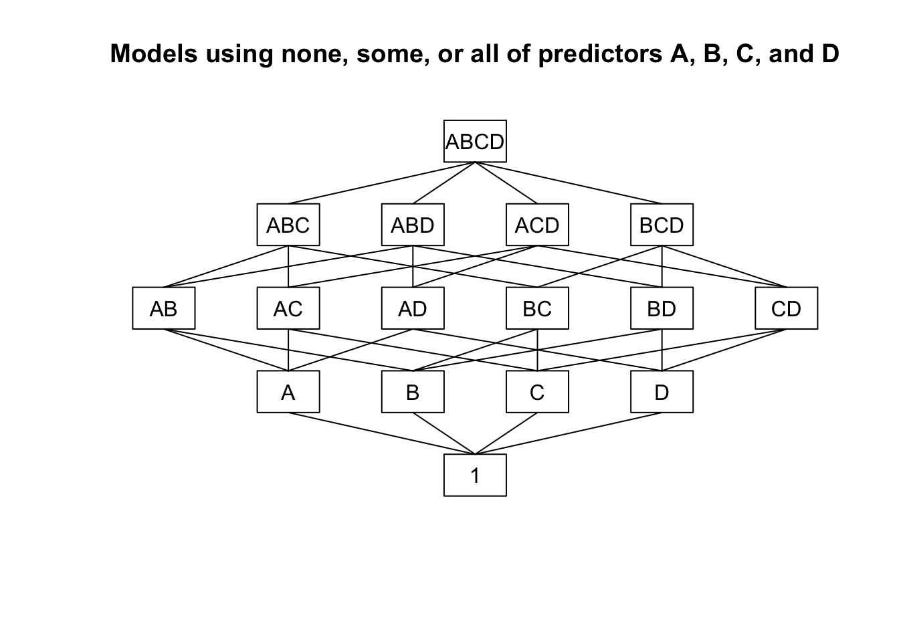

Code
plot(runif(1),runif(1),type='n',xlim=c(-11,11),ylim=c(1,19),
axes=FALSE,xlab='',ylab='',
main='Models using none, some, or all of predictors A, B, C, and D')
rect(xleft=c(-1,-7,-3,1,5,-11,-7,-3,1,5,9,-7,-3,1,5,-1),
ybottom=c(1,5,5,5,5,9,9,9,9,9,9,13,13,13,13,17),
xright=c(1,-5,-1,3,7,-9,-5,-1,3,7,11,-5,-1,3,7,1),
ytop=c(3,7,7,7,7,11,11,11,11,11,11,15,15,15,15,19))
text(x=c(0,-6,-2,2,6,-10,-6,-2,2,6,10,-6,-2,2,6,0),
y=c(2,6,6,6,6,10,10,10,10,10,10,14,14,14,14,18),
labels=c('1','A','B','C','D','AB','AC','AD','BC',
'BD','CD','ABC','ABD','ACD','BCD','ABCD'))
segments(x0=c(0,0,0,0,-6,-6,-6,-2,-2,-2,2,2,2,6,6,6,
-10,-10,-6,-6,-2,-2,2,2,6,6,10,10,-6,-2,2,6),
y0=c(rep(3,4),rep(7,12),rep(11,12),rep(15,4)),
x1=c(-6,-2,2,6,-10,-6,-2,-10,2,6,-6,2,10,-2,6,10,
-6,-2,-6,2,-2,2,-6,6,-2,6,2,6,0,0,0,0),
y1=c(rep(5,4),rep(9,12),rep(13,12),rep(17,4)))